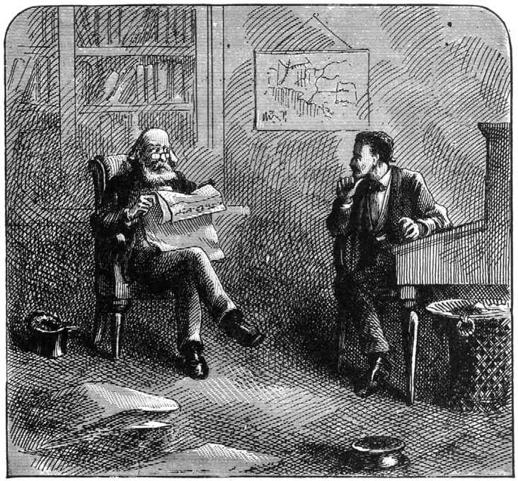

我就任农业报临时主编一职时，心里难免感到有点儿不踏实。就像一个新水手要去指挥一条大船时那样难免感到有点儿不踏实。但是当时我的处境迫使我不得不以追求薪金为目的。那份报纸的正式主编要去度假，于是我就接受了他所提出的条件，代理了他的职务。
一经重新有了工作可做，我的心情痛快极了，整个那一星期里，我是越想越乐。我们的报纸付印了，我那天一直眼巴巴地等着，一心想要知道，我花费的那些心血是否吸引了读者们的注意。太阳快落山时，我离开了编辑室，聚集在底层楼梯口的一群人，有大人，也有小孩，不约而同，一下子都向两边分散开，给我让出了一条路，我只听见其中有一两个人说：“瞧，那就是他呀！”这件事当然使我高兴。第二天早晨，我看到与昨天类似的一群人在底层楼梯口，有单独的，有成双的，都纷纷散开了，有的在这里，有的在那里，都一起站在马路上，站到街对面，兴致勃勃地留心看我。当我走近时，那群人就分散开来，向后退去，我只听见一个人说：“瞧瞧他那双眼睛！”我只装作没看见自己吸引了他们的注意，但暗中却对此感到高兴，打算写一封信，把这情景告诉我的姑母。我登上那短短的一段楼梯，刚走近房门口，就听见一阵愉快的人语声和响亮的欢笑声，我推开了门，瞥见两个乡巴佬似的年轻人，他们一看见了我，立即变得面色煞白，露出慌张的神情，然后哗啦一声响，两个人都冲到窗外去了。我大吃一惊。
过了大约半小时，一位老先生，胸前飘拂着一把长胡须，脸上带着一副文雅但又相当严肃的表情，走进了屋子，我招待他坐下了。看来他好像有什么心事。他摘下他的帽子，把它放在地上，然后从帽子里取出一块红绸手绢和一份我们出的报纸。
他把那份报纸放在膝上，然后，一面用手绢擦他的眼镜，一面问我道：“你就是新任的主编吗？”
我说我就是。
“你以前主编过农业报吗？”
“没有，”我说，“我这是第一次尝试。”
“看来确是这么一回事。你在农业方面有什么实践经验吗？”
“没有；我想我没有。”
“我已经从直觉中知道了这一点，”老先生说，一面戴上他的眼镜，把他那张报纸折整齐了，然后带着一副粗鲁的神气，从眼镜上方瞪着我，“我想给你读一段报纸，肯定就是这篇社论使我产生了那种直觉。听着，看这是不是你写的：
萝卜决不可以拔，这样就会损伤它们。最好的办法是叫一个小孩爬上去，让他摇动那树。
“喂，你倒认为这几句写得怎样？——难道这真是你写的不成？”
“你认为这几句写得怎样？哦，我认为写得挺好嘛。我认为这是有道理的。我深信，单说是在这个村镇里，就有千百万蒲式耳萝卜，都由于在半熟的时候被拔起而糟蹋了，同时，如果人们叫一个小孩爬上去摇那树——”
“去摇你的祖奶奶！萝卜又不是长在树上的！”
“哦，萝卜不是的，不是那样长的，对吗？咳，谁又说萝卜是那样长的。之所以这样措词，是为了要用比喻，完全是在用比喻呀。任何有一些常识的人都会明白，我的意思是说，那孩子应当去摇那藤[1]呀。”
听了这番话，老人就站起来，把他那张报纸撕得粉碎，还在碎报纸上面踏了一阵，再用他的手杖砸碎了几件东西，说我所懂得的还不及一头牛多；然后他走了出去，随手砰地关上了门，总之，他那番举动使我想象到他是对什么事感到不满。但是，由于不知道那问题究竟出在哪里，我对他也就无能为力了。
刚过了不多一会儿，一个身材瘦长、模样像具死尸的人，他那一绺绺细长的头发一直披到肩上，那张七高八低的脸上留下了一星期没剃光的胡子茬，这人一下子冲进了门，突然间停下了，一动不动，手指放在唇边，躬身俯首，做出一副留心倾听的姿势。他听不出一点声响。他仍旧去听。仍旧没有声响。于是他就锁上了门，小心翼翼地踮起脚向我走过来，一直走到距离我不太远的地方，然后止住步，先十分关心地向我反复仔细地端详了一会儿，然后从怀里掏出了折叠好的一份我们出的报纸，说：
“瞧呀，这是你写的。读给我听听——快！救救我吧。我难受极啦。”

于是我开始读以下的文章；随着我逐句读出时，我可以看出他的情绪开始缓和，我可以看出他那紧张的肌肉放松了，脸上的焦急神情消失了，宁静与安逸悄悄地笼罩了他的面容，好似柔和的月光照耀在一片荒凉的景物上：
鸟粪[2]是一种优质的禽鸟，但是饲养时必须十分当心。不可以早于六月，或晚于九月，将其从产地输入。冬天应当将其安置在温暖的地方，可以让它在那里孵出小鸟。
我们今年的谷物收成肯定是晚的。因此农民最好是在七月里，而不是在八月里，开始插他们的玉米秆，种他们的荞麦饼。
谈到南瓜嘛——这种浆果可是新英格兰内地人最爱吃的一种，他们认为，用来做水果蛋糕，要比用醋栗更好，他们还认为，它要比紫莓更为适宜于喂牛，因为它更能填饱牛的肚子，令其感到满足。南瓜是盛产于北方的柑橘科中唯一适宜于食用的，此外就只有葫芦和其他一两种倭瓜了。但是把它和灌木一起种在前院里，这种风俗很快就要过时，因为现在一般人都认为，将南瓜作为遮阳树来种，这办法可是失败了。
现在，当温暖的天气临近，公鹅开始产卵……
这人听得激动起来，他一下子向我跳过来跟我握手，说：
“好了，好了——这下子可好了。现在我总算知道我是正常的人了，因为你刚读出的那一段，逐字逐句，都和我原先读的一样呀。可是，朋友，今天早晨我第一次读到它的时候，我就心里想，尽管我那些朋友一直紧紧守着我，但是我绝对不相信他们说的那些话，可这一来我相信我肯定是疯了；一想到这里，我就发出一声狂吼，喊得连你在两里外也能听见，然后就要动手杀人——因为，你瞧，既然我迟早总要耍出那一招，所以还是趁早动手为妙。我又把其中的一段读了一遍，这样可以断定我的想法是否正确，接着我就纵火烧了我的房子，然后跑了出去。把好几个人打成重伤，把一个家伙吓得爬上了树，如果我要再惩治惩治他，尽可以去那儿把他揪下来。但是，走过这里的时候，我想应该先来拜访你，好将这问题彻底核实一下，而现在总算核实清楚了，我对你说，躲在树上的那家伙算他走运。否则我回去的时候，准会把他宰了。再见啦，先生，再见啦；你卸去了我心头的沉重负担。我的理智承受住了你那篇谈农业的文章给我施加的压力，现在我知道，此后无论什么事也不能再使我丧失理智了。再见啦，先生。”
我对这位先生乐于打伤人和烧房子的事感到有点儿不安，因为我不禁想到自己对那些举动多少起了一些推波助澜的作用。但是这些念头很快就被驱散了，因为这时候那位正式主编进来了！（我心里想，如果你能像我提议的那样去一趟埃及，那我就有机会露一手了，可是你却不肯去那儿，瞧你现在就回来了。我早就担心你会来这一套。）
主编露出一副愁郁的、惶惑的、沮丧的神情。
他视察了一遍那个老捣蛋鬼和那两个年轻庄稼汉所造成的破坏，然后说：“这是一件很糟糕的事——一件非常糟糕的事。瞧那胶水瓶被砸碎了，再有六块玻璃，再有一只痰盂，再有两个蜡烛台。但这还不是最糟的。这一来报纸的名声可就破坏了——而且，我担心，是永远破坏了。不错，以前从来不曾有这么多人要订阅这报，原先的发行量从来不曾像这样地大，而且从来不曾像这样出名；——但是，难道你要靠疯狂出名，要以精神失常使业务蒸蒸日上不成？我的朋友，我是不会夸大其词的，现在外面街上聚满了人，有的人还跨在围栏上，要等着看上你一眼，因为他们都认为你是一个疯子。而他们读了你写的那些社论，确实是有理由这样看待你的。那些社论给新闻界带来耻辱。咳，你脑子里转到了什么念头，竟然会编出这样的报纸？看来你对农业的基础知识一窍不通。你把犁沟和犁耙混为一谈[3]；你谈到了牛的脱角季节；你还主张驯养臭鼬，因为它们生性顽皮，最会捉老鼠！你又大发高论，说什么蛤蜊会保持安静，只要你向它们奏乐，我看这是多此一举——完全是多此一举。凭你什么举动，都不会打扰蛤蜊呀。蛤蜊是永远保持安静的。蛤蜊是毫不理会音乐的。哎呀，我的天呀，朋友！如果你将追求愚蠢无知作为你毕生研究的课题，那你完成学业的时候也不可能比现在这样获得更高的荣誉。我从来不曾见过有这样的事。你说，根据观察，你认为，七叶树的坚果，作为一种商品，正在不断地受到人们欢迎，这简直是存心要毁了这份报纸。现在我要你放弃这职位，离开这地方。我也不要再去度假了——即使我再有假期，我也没法享受了。肯定不能在你代替我的时候。对你下一步可能再提出的什么建议，我会永远捏一把汗。我每次一想到你以‘造园艺术’为题讨论牡蛎养殖场，就受不了。我要你离开这里。无论什么理由也不能使我再去度假。咳！为什么你早先不告诉我，你对农业一无所知呢？”
“要我告诉你，告诉你这个玉米秆子，你这棵卷心菜，你这个花菜秧子吗？我可是第一次听到你这样麻木不仁的讲话。我告诉你：我从事编辑这一行，前后已有十四个年头，这还是第一次听说，编报纸需要掌握一些什么知识。你这个萝卜头！是谁在给那些二流报纸写剧评？咳，还不是那一伙拔尖儿的鞋匠、一伙药剂师的学徒，他们对如何演好戏剧，并不比我对如何种好庄稼懂得更多呀。是谁在写书评？是那些从来不曾写过一本书的人。是谁在写那些有关财政的重要社评？恰巧就是那些对财政一窍不通的人。是谁在批评那些攻击印第安人的战役？是那些先生们，他们连‘呐喊’和‘窝棚’两个词[4]的区别都不知道，他们从来不曾提着一把印第安战斧奔跑，或者从他们几个家属的身上拔出箭来，晚上用它们烧旺一堆营火。是谁写那些呼吁禁酒的呈文，大声疾呼不可以酗酒的？就是那一些家伙，他们在进入坟墓之前，是不会有一天不喝得酒气熏人的。是谁在编农业报，是你——不就是你这个山芋吗？在一般情况下，那些人从事写诗这一行业失败了，写黄色小说失败了，写情节耸人听闻的剧本失败了，编本埠新闻又失败了，最后才退到编辑农业报这条线上，这样暂时可以不致进贫民所。你竟然要教我一些有关报纸行业的事！阁下，我精通这一行，从阿尔发到奥马哈[5]，我告诉你：一个人知道的越少，他的名气就越大，而他的薪金也就越高。天知道，要是我愚昧无知，而不是受过教育；要是我举动莽撞，而不是这样拘谨，我就会在这冷酷无情、自私自利的世界上一举成名。我告辞了，阁下。既然我受到你这样的待遇，我愿意离开这里。但是，我已经尽了自己的责任。在许可的范围内，我已经履行了我的合同。我曾经说，我能使你的报纸投合所有各界人士的兴趣——这一点我已经做到了。我还说，我能将你的发行量增加到两万份；如果让我再主编两星期，我是会做到这一点的。再说，我原可以让你的报纸拥有农业报从来不曾有过的那种最高级的读者——其中没有一个是农民，其中不管是哪一个，无论怎样也分不清一株西瓜树和一条桃子藤。这一次决裂，损失的是你，而不是我，大黄[6]。再见啦。”
于是我离开了那里。
约一八七〇年
[2] 这里这位主编要写的可能是guanay，那是秘鲁产的一种鸬鹚，是鸟粪肥料的主要来源，但是他错写为guano，意思便成了鸟粪。
[3] 英语中犁沟是furrow，犁耙是harrow，读音近似。
[4] 呐喊，原文为war-hoop指印第安人作战时发出的呐喊声；窝棚，原文为wigwam是印第安人用兽皮、席子和树枝搭成的圆顶棚屋。两字字形有相似处。
[5] 阿尔发Alpha是希腊字母表中的第一个字母，奥米加Omega是最后的一个字母，“从阿尔发到奥米加，”意思是“从头到尾”，或彻底精通之意，这里将Omega说成了奥马哈Omaha，即是一个美国城市名。
注 释
[1] 似指萝卜的羽状叶，俗称萝卜缨子。
[2] 这里这位主编要写的可能是guanay，那是秘鲁产的一种鸬鹚，是鸟粪肥料的主要来源，但是他错写为guano，意思便成了鸟粪。
[3] 英语中犁沟是furrow，犁耙是harrow，读音近似。
[4] 呐喊，原文为war-hoop指印第安人作战时发出的呐喊声；窝棚，原文为wigwam是印第安人用兽皮、席子和树枝搭成的圆顶棚屋。两字字形有相似处。
[5] 阿尔发Alpha是希腊字母表中的第一个字母，奥米加Omega是最后的一个字母，“从阿尔发到奥米加，”意思是“从头到尾”，或彻底精通之意，这里将Omega说成了奥马哈Omaha，即是一个美国城市名。
[6] 可以入药的大黄，这里显然用作骂人话。